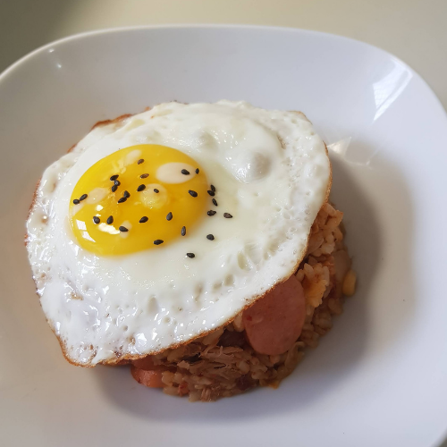

主頁
學習專區
食譜大全
料理小訣竅
常見問題
聯絡我們
泡菜炒飯
材料
時間
熱量
10
10
290
種類
分鐘
大卡

材料和作法
廚房器具:剪刀,平底鍋
韓國泡菜 1/2碗
雞蛋 1顆
香腸 1/2根
白飯 1碗
醬油 1匙
香油 適量
黑芝麻 適量
用剪刀將泡菜剪成小塊，香腸切片
加半湯匙油，先煎一顆荷包蛋，拿出來備用。就可一鍋用到底，不用換鍋或中途洗鍋
平底鍋加油，加入香腸和將切成小塊的泡菜下鍋拌炒
將泡菜推到一邊，加醬油，待幾秒鐘讓醬油焦糖化，快速與泡菜香腸拌均勻
翻炒至泡菜沒水氣，關火
將溫或涼的白飯倒進（如冷藏過的飯先微波加熱。）與泡菜拌均勻
拌均勻後重新開火，拋幾下翻炒便完成。加幾滴香油添香
最後裝盤，蓋上煎蛋，灑上磨碎的黑芝麻便完成